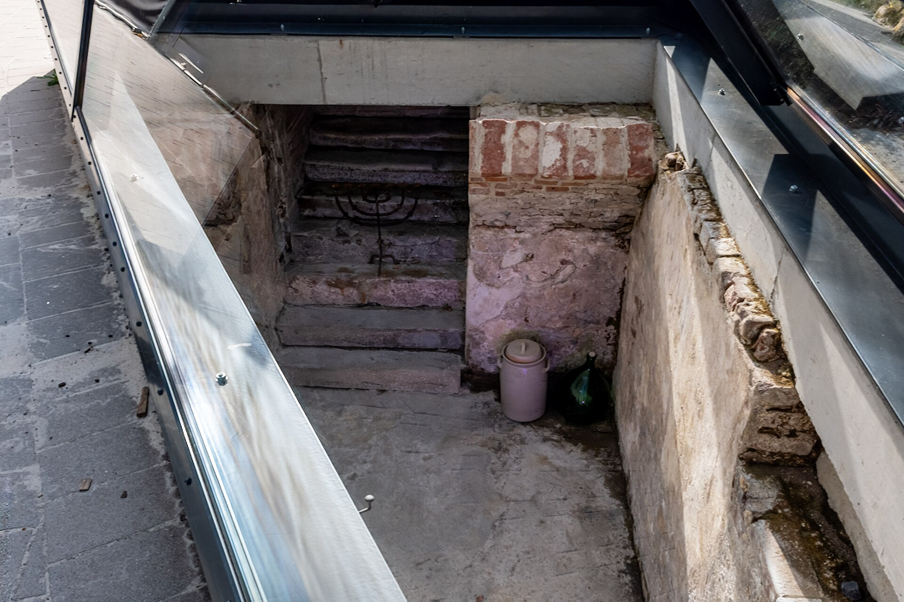

Bowed Basement Walls in Cedar Rapids, IA
A bowed basement wall is a structural problem, but it is rarely an emergency, and the difference comes down to one measurement. As general guidance, a wall that has bowed less than about 2 inches and shows no fresh cracking can usually be stabilized where it stands. Past 2 inches, or with the base of the wall sliding inward, the wall needs anchors, excavation, or partial rebuilding, and it should be assessed promptly. This page gives you the thresholds contractors and engineers work from, how to take the measurement yourself, what each fix actually does, and what the work costs in published ranges, so you can judge any quote you are handed.
In Cedar Rapids, the details are local: homes here sit on Clyde soil over Iowa clay and loess soils, and 60.6% of the housing stock predates 1980. This page combines the full bowed basement walls guide with Cedar Rapids's measured soil, rainfall and housing data, so you can judge any quote against both.
Request a free inspection
Cedar Rapids by the numbers: soil, rainfall and housing age
Generic foundation advice ignores the three things that decide how foundations actually behave here: the soil series under the house, the local rain and frost pattern, and how old the housing stock is. These are Cedar Rapids's measured numbers, from public data — not estimates:
| Dominant soil series | Clyde (Clyde silty clay loam, 0 to 3 percent slopes) |
| Clay in the topsoil | 30% |
| Shrink–swell (LEP) | 4.2% — moderate |
| Seasonal water table | At or near the surface |
| Average rainfall | 38.3 inches a year |
| Days below freezing | about 126 a year |
| Homes built before 1980 | 60.6% of housing |
| Homes built before 1960 | 30.8% of housing |
| Population | 120,758 |
| Elevation | about 728 feet |
The ground under most Cedar Rapids homes is Clyde soil. Its topsoil runs 30% clay, and its most active layer has a linear extensibility of 4.2% — a moderate shrink–swell rating on the USDA scale. That is the engine behind most foundation movement here: the soil swells when it soaks up rain and shrinks as it dries, and the foundation rides those cycles. The seasonal high water table sits at or near the surface, so basements and crawl spaces also fight groundwater, not just surface rain.
Housing age stacks the risk. 60.6% of Cedar Rapids's homes were built before 1980 and 30.8% before 1960 — footings poured to older standards, with decades of soil cycles behind them. The city averages 38.3 inches of rain a year, peaking in Jun, and about 126 days below freezing — the wet–dry and freeze–thaw swings that test those older footings hardest.
Data: USDA Soil Survey (SSURGO) via Soil Data Access, sampled at a residential point in Cedar Rapids; Open-Meteo archive (ERA5) 2015–2024; US Census Bureau ACS 2023 5-year via Census Reporter; USGS Earthquake Catalog; population via Wikidata. Retrieved November 2026.
Watch: Cedar Rapids's rainfall, soil and housing-age data in 11 seconds — animated from the same sources listed above.
How much bow is too much? Start with the measurement
Under Cedar Rapids, the sampled soil is Clyde — 30% topsoil clay with a moderate shrink–swell rating (LEP 4.2%). Start with a number, not an opinion. Take an 8-foot straightedge, a long level, or a taut string held against the top and bottom of the wall, and measure the gap between it and the wall surface where the bow is worst, usually at mid-height. Write the number on the wall in pencil with the date. That single measurement drives every recommendation that follows, and repeating it each season tells you whether the wall is still moving or has settled into its new position.
Interpret the number with the table below, and treat it as general guidance rather than a verdict on your wall. Cracking pattern matters as much as distance: a clean horizontal crack at mid-height tells a different story from stair-step cracks running to the corners, and a wall whose bottom course has slid inward off its footing, called shear, is failing in a way no strap can hold. If your measurement comes with shear, wide fresh cracks, or a bow that changed noticeably over one winter, skip the monitoring step and get an engineer or an experienced contractor out.
| Inward bow | What it usually means | Typical fix class |
|---|---|---|
| Under 1/2 inch, no cracks | Often within original construction tolerance, or very early movement | Monitor; re-measure each season; fix drainage first |
| 1/2 to 2 inches, horizontal crack at mid-height | Active soil pressure; the wall is deflecting but usually intact | Stabilize in place: carbon fiber straps or wall anchors |
| 2 to 4 inches, stair-step cracks, mortar joints opening | Advanced movement; the wall's capacity is reduced | Wall anchors or steel braces, often with exterior excavation and drainage work |
| Over 4 inches, or the bottom of the wall sliding in (shear) | The wall is failing or has failed structurally | Excavation, straightening, or partial wall rebuild; engineer assessment first |
How do I measure how far my basement wall has bowed?
Stretch a taut string or hold an 8-foot straightedge vertically against the wall at its worst point, then measure the gap between the string and the wall surface at mid-height. That gap is your bow measurement. Mark the spot, date it, and re-measure each season: a number that keeps growing means the wall is still moving.
How far can a basement wall bow before it fails?
There is no single failure number, but as general guidance a bow under 2 inches is usually stabilized in place, 2 to 4 inches typically needs anchors or braces, and past 4 inches, or any bow with the wall's base sliding inward, usually means partial rebuild. Engineers also weigh cracking patterns, because a wall can be in trouble at smaller measurements.
What causes a basement wall to bow inward
60.6% of Cedar Rapids homes were built before 1980, so most bowed basement walls work here happens on older footings. Expansive clay is the main offender across much of the Midwest and South. Clay absorbs water and swells, then shrinks as it dries, so the pressure against a wall rises and falls with the weather instead of staying constant. In Iowa and Wisconsin, frost adds a second push: water in the soil freezes, expands, and drives against walls that are already loaded, which is why homeowners in Des Moines, Cedar Rapids and Madison often notice cracks widening in late winter. Saturated soil from a high water table or poor drainage keeps the pressure on year-round, and a leaning basement wall in those states is usually a clay-plus-frost story.
The fixable part of this is water management. A roof dumps thousands of gallons beside a foundation every year, and if downspouts end at the wall and the soil slopes toward the house, that water soaks the exact soil that is pushing on your wall. Regrading, extending downspouts well past the backfill zone, and keeping gutters clear will not move a bowed wall back, but they can cut the pressure enough that a stabilized wall stays stabilized. Contractors who quote a wall repair without asking about your drainage are skipping half the diagnosis.
Two smaller causes deserve a mention because they are so often misdiagnosed. Large trees planted close to the house dry the soil unevenly and their roots can add localised pressure, though roots alone rarely bow a sound wall. And a wall built with weak mortar, shallow footings or no reinforcement, common in older housing stock, may bow under loads a modern wall would shrug off. That is why two neighbouring houses on the same street can age so differently: same soil, same weather, different wall.
What causes a basement wall to bow inward?
Soil pressure causes almost every bowed basement wall. Clay soil swells as it absorbs water and pushes sideways against the wall, frost adds pressure in winter, and poor drainage keeps that soil saturated for months. The pressure peaks around mid-height, which is why walls bow inward at the middle instead of tipping over from the top.
Can fixing gutters and grading stop a wall from bowing further?
Yes, if water is the driver and the bow is still small, drying out the soil against the wall can slow or stop the movement. Extending downspouts, regrading soil so it slopes away, and fixing drainage cuts the pressure that caused the bow. Drainage work will not straighten a wall that has already moved, though; it only removes the force.
Three ways to fix a bowed wall (and one last resort)
Cedar Rapids averages 38.3 inches of rain a year — moisture management is part of any lasting fix. Carbon fiber wall repair is the least invasive fix. Strips of high-strength carbon fiber are epoxied vertically to the inside face of the wall, typically every 4 feet, and anchored to the floor joist system above and the footing below. They add enormous tensile strength and stop a wall moving further, but they cannot straighten it. Steel basement wall braces work similarly from inside: beams are bolted to the floor and joists and bear against the wall, holding it in place with a slim profile that can be finished over.
Wall anchors work from outside. A steel rod is driven through the wall into stable soil well beyond the backfill, an exterior plate bears against that soil, and an interior plate is tightened against the wall. Because the anchor pulls rather than merely holds, anchors can often straighten a wall gradually, with plates tightened a little at a time over weeks or months. Anchors need yard access and enough property to reach undisturbed soil, which rules them out on some tight urban lots. Excavation and rebuilding, the fourth option, is reserved for walls too far gone to hold.
Choosing between them comes down to three questions. How far has the wall moved? Straps and braces hold position, anchors can recover some of it. Do you plan to finish the basement? Braces and anchor plates sit inside the room, while straps finish nearly flush. And is there room outside? Anchors need a clear run into the yard, clear of patios, driveways and property lines. A good inspection walks through all three with your wall's measurements in hand.
- Carbon fiber straps: hold the wall in place; best under about 2 inches of bow; no digging
- Steel wall braces: hold the wall in place from inside; permanent and finishable
- Wall anchors: tie the wall to stable soil; can gradually straighten moderate bows
- Excavation or partial rebuild: for walls past roughly 4 inches or showing shear
Wall anchors vs carbon fiber straps: which is better?
Carbon fiber straps are better for bows under about 2 inches: they are glued and anchored to the wall, need no digging, and hold the wall at its current position. Wall anchors suit larger bows because steel rods tie the wall to stable soil in the yard and can gradually pull it back toward plumb over time.
Do basement wall braces stay in the house permanently?
Yes, braces, straps and anchor plates are permanent installations, and that is by design. A bowed wall has lost some of its original strength, so the reinforcement keeps carrying part of the soil load for the life of the house. The steel is slim, paintable and usually finished over, so most homeowners stop noticing it within weeks.
What bowed basement wall repair costs
Under Cedar Rapids, the sampled soil is Clyde — 30% topsoil clay with a moderate shrink–swell rating (LEP 4.2%). Published cost guides put stabilizing one full bowed wall at roughly $3,000 to $8,000, and that band covers most strap, brace and anchor jobs on a standard wall. Carbon fiber straps run $500 to $1,200 per strap installed in published ranges, spaced about 4 feet apart, so you can sanity-check a quote by counting straps against wall length. When homeowners compare notes on a badly deteriorated block wall, the quotes split into exactly two camps: interior stabilization at the lower end, and full excavation with wall replacement at several times that figure.
Two warnings about quotes. First, a suspiciously cheap quote usually means fewer straps or anchors than the wall needs, spaced too far apart to share the load. Second, drainage work is often quoted separately, and skipping it to save money is false economy, because the water that bowed the wall is still there. FoundationMatch is a matching service, not a contractor: it connects you with local companies, and any quote you get should list strap or anchor count, spacing, and the warranty in writing. Our foundation repair cost hub breaks down pricing method by method.
What moves a quote inside that band is mostly access and scope. A wall that can be reached from an unfinished basement prices lower than one hidden behind finished rooms that must be opened and later restored. A long wall needs more straps or anchors than a short one. And if the same wall also leaks, the drainage and waterproofing work is a separate line item, not an upsell: a stabilized wall that still takes on water has only had half its problem solved. Ask every bidder to price the structural fix and the water fix separately so you can see what each part really costs.
How much does it cost to fix a bowed basement wall?
Stabilizing one full bowed wall typically costs $3,000 to $8,000 in published guide ranges, depending on the system and wall length. Carbon fiber straps run $500 to $1,200 per strap installed, spaced roughly every 4 feet. Excavation and wall replacement cost far more, which is why catching a bow early matters financially as well as structurally.
How much do wall anchors cost?
Wall anchor projects usually land inside the same $3,000 to $8,000 full-wall range quoted in published guides, because anchors are priced per wall rather than per anchor on most quotes. The total depends on wall length, anchor spacing, and whether the yard allows a straight anchor run. Get the quote itemized so anchor count and spacing are in writing.
When a bowed wall becomes an emergency
60.6% of Cedar Rapids homes were built before 1980, so most bowed basement walls work here happens on older footings. A bowing basement wall becomes an emergency when it stops moving slowly. Call the same day if you see fresh cracks opening, hear cracking or popping from the wall, notice the bottom course sliding inward, or find the bow visibly worse after a storm. Doors and windows in the rooms above suddenly sticking can mean the movement has reached the framing the wall supports. Until someone looks at it, keep heavy loads, vehicles and stockpiled soil away from that side of the house.
You do not need to evacuate over a stable 1-inch bow that has not changed in a year, and you should be wary of anyone who tells you otherwise at the door. The honest sequence is measure, monitor or assess, then fix at the level the measurement supports. If two quotes disagree wildly about urgency, a structural engineer's independent report settles it, and it costs a fraction of any of the repairs on this page.
One more practical point while you decide: document everything. Dated photographs of the wall, your pencil measurement marks, and a note of when upstairs doors started sticking give an engineer or contractor a movement history instead of a snapshot, and they give you evidence if you later sell the house or argue with an insurer. A bowed wall with five years of records showing no movement after stabilization is a solved problem. A bowed wall with no records is an unknown, and unknowns are what buyers and lenders price against you.
- Fresh or rapidly widening cracks in the wall
- The bottom of the wall sliding inward (shear)
- A bow past about 4 inches
- Sudden change after a storm or a thaw
- Cracking or popping sounds coming from the wall
Is a bowing basement wall an emergency?
A bowing wall is an emergency only when it is moving fast or showing failure signs: fresh wide cracks, the base sliding inward, or a bow past about 4 inches. A stable bow under 2 inches is urgent but not an emergency; book an inspection soon and monitor it. When in doubt, a structural engineer gives the fastest unbiased answer.
What foundation repair costs in Cedar Rapids
Cedar Rapids repairs fall into fairly predictable ranges. The figures below are published market ranges — not quotes, and not prices from any specific company. Your cost depends on how much of the foundation has moved and the piers it needs.
| Repair | Typical range | Notes |
|---|---|---|
| Steel or helical piers (per pier, installed) | $1,000 – $2,500 | Published national guides put piers at $1,000–$3,000 each; most homes need 6–14, driven or screwed to stable strata below the problem soil. |
| Average structural repair (whole job) | $4,000 – $12,000 | The typical total for a residential piering job, depending on pier count, access, and how much lift is attempted. |
| Slabjacking / mudjacking (per section) | $500 – $1,500 | Raises a settled slab section by pumping material beneath it. Best for porches, walks, and mild settlement. |
| Polyurethane foam lifting (per section) | $1,000 – $2,500 | Foam injected under a slab expands and lifts it. Faster and cleaner than mudjacking, at a higher price. |
| Interior drainage system + sump pump | $2,000 – $6,000 | Controls groundwater under the floor; often paired with structural work where the water table is high. |
| Foundation crack injection (per crack) | $500 – $2,500 | Epoxy or polyurethane injection seals a leaking or cracked wall section. DIY kits run $75–$225 but cannot restore strength. |
| Exterior grading & drainage correction | $500 – $2,500 | Regrading soil and extending downspouts so water stops collecting at the footing. |
Flood-affected neighborhoods may need moisture remediation alongside structural repair, which affects the total price.
Be wary of phone prices given without measurements — a proper quote follows an inspection and is itemised, so you can compare offers line by line. Our national cost guide shows how to check any quote against these ranges.
Bowed Basement Walls in Cedar Rapids: local questions
What soil conditions affect bowed basement walls in Cedar Rapids?
Cedar Rapids homes sit mostly on Clyde soil, with 30% clay in the topsoil and a shrink–swell rating of 4.2% (moderate). Crews plan depth and spacing around that soil behaviour, because a fix that ignores how the local ground moves with moisture will not hold. Ask any contractor bidding on your home to explain, in writing, how their plan accounts for this soil — a good one answers without hesitating.
Are older Cedar Rapids homes more likely to need bowed basement walls?
Yes — 60.6% of Cedar Rapids's housing was built before 1980 and 30.8% before 1960. Those homes have older footing designs and fifty-plus years of soil movement behind them, so they make up most serious repair work. Age alone is not a diagnosis, though: what matters is measured movement, so an older home with stable readings may need nothing at all.
How does Cedar Rapids's rainfall affect bowed basement walls?
Cedar Rapids averages 38.3 inches of rain a year, peaking in Jun. Wet months swell the soil and load walls with water pressure; dry months shrink it away from footings. That cycle is why timing and drainage are part of any durable repair plan here — fixing the structure without managing the water that moves the soil usually means the problem comes back.
Frequently asked questions
Will a bowed basement wall get worse if I leave it?
Almost always, yes, though often slowly. The soil pressure that bent the wall is still there, and each wet season or freeze cycle can add a fraction of an inch. Walls rarely fail without warning, but a bow that grows from 1 inch to 3 inches moves you from a strap job to an anchor or rebuild job, at several times the cost.
Can I sell a house with a bowed basement wall?
Yes, but you must disclose it, and many buyers and lenders will require the wall to be stabilized before or at closing. A documented repair with a transferable warranty usually protects your price better than a discount does. FoundationMatch is a matching service, not a contractor, and can connect sellers with local companies that provide that paperwork.
Does homeowners insurance cover bowed basement wall repair?
Usually not. Standard homeowners policies exclude damage from soil movement, settling and gradual water pressure, which are the causes behind nearly every bowed wall. Coverage sometimes applies when a covered sudden event, such as a burst pipe, saturates the soil and damages the wall. Read your policy's earth-movement exclusion, and document any sudden event with photos and dates.
How long does it take to stabilize a bowed basement wall?
Most strap, brace and anchor installations take one to two days for a single wall. Straps are fastest because there is no excavation; anchors add time for drilling or digging in the yard and for setting the exterior plates. Add inspection and permitting time up front, and plan on a follow-up visit if anchors are being tightened gradually.
Should I hire a structural engineer before calling a repair company?
Yes, for any bow over about 2 inches, any wall whose base is sliding inward, or any quote recommending excavation. An engineer's report is independent of selling repairs, so the scope you get is unbiased, and contractors can price against it. For a small, stable bow with no cracking, a reputable company's free inspection is a reasonable first step.
Do carbon fiber straps straighten a bowed wall?
No. Carbon fiber straps hold a wall at its current position and stop further inward movement; they do not pull it back to straight. Straightening requires wall anchors tightened over time, excavation from outside, or rebuilding the wall section. If a contractor promises straps will straighten your wall, ask for that claim in writing before you sign anything.
Related guides
Request a free foundation inspection
Tell us where you are and what you are seeing — a local specialist will call you back to schedule it.
Prefer to talk first? [Call-tracking phone number to be added before launch]